Top 5 most brilliant hydrangea fields in Da Lat in 2025

Table of Contents
- 1. Trai Mat hydrangea garden - Check-in among the dreamy flowers
- 2. Xuan Tho hydrangea field - Bright flower garden in the middle of mountains and hills
- 4. Sculpture Tunnel Hydrangea Garden - A sweet touch in the middle of Clay Village
- 5. The Florest hydrangea garden - "Flower paradise" in the middle of Ta Nung forest
- 6. Pocket the experience of "virtual living" in Da Lat's hydrangea fields
- 7. Interesting things about the hydrangea fields in Da Lat
- 8. Note when visiting Da Lat hydrangea fields
- 9. What to eat after checking in to the hydrangea field?
Referring to Da Lat, besides the green pine hills and cool climate all year round, we certainly cannot ignore the image of vast hydrangea fields, blooming brightly in the middle of the highlands. The soft, romantic beauty of this flower has become a distinctive symbol, making many tourists fall in love at first sight.
If you are planning to visit the dreamy city in the near future, don't forget to schedule a check-in at the most prominent Da Lat hydrangea fields in 2025. These gardens are not only the perfect background for thousands of liked photos, but also an ideal stop for you to relax and immerse yourself in the fresh nature. Let's explore the list of 5 beautiful hydrangea coordinates below to make your trip to Da Lat more memorable!
1. Trai Mat hydrangea garden - Check-in among the dreamy flowers
1.1. Experience Trai Mat hydrangea fields
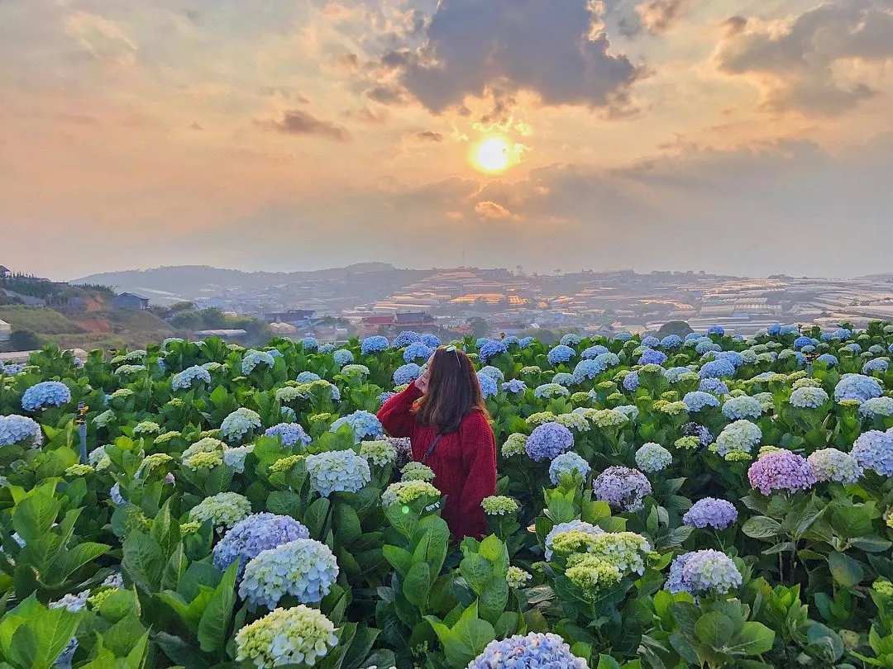
Located in Trai Mat area - only about 7.5 km from the city center, this is considered one of the largest and most prominent Da Lat hydrangea fields. With a space filled with the gentle blue and purple colors typical of hydrangeas, this place becomes an ideal destination for those who love romance and want to preserve beautiful moments in nature.
The attraction of the garden lies not only in its large area but also in its diverse landscape system, arranged extremely impressively. The most prominent of which is "Stairway to Heaven" - a popular virtual living coordinate on social networks, often appearing in young people's travel albums. In addition, you will also encounter unique shooting angles such as "moon bow" or "love rainbow" - well-invested miniatures, promising to bring a memorable check-in experience.
1.2. Address and how to get to the hydrangea field
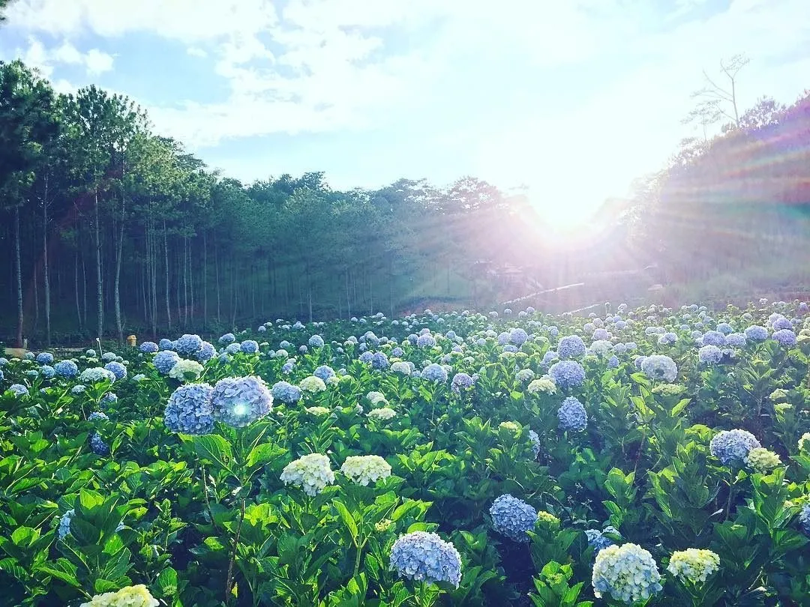
-
Address:519B Tu Tao 2, Trai Mat, City. Da Lat, Lam Dong
-
Distance from center:~7.5 km
Directions:
From Da Lat market, you go in the direction of Linh Phuoc Pagoda (Ve Chai Pagoda), continuing to enter the Trai Mat area. When approaching Trai Mat station, you will see a sign leading to the hydrangea garden. Going about 2 km further, you will see a sign "500m hydrangea garden path", just continue following the instructions to get there.
1.3. Opening hours and ticket prices to visit hydrangea garden
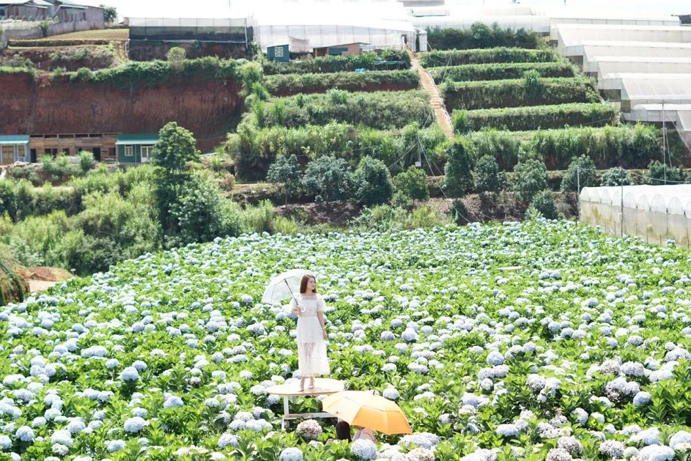
-
Opening hours: Free, visitors can visit at any time of the day
-
Ticket price:15,000 VND/person - extremely "affordable" price for a sparkling background
2. Xuan Tho hydrangea field - Bright flower garden in the middle of mountains and hills
2.1. Explore Da Lat hydrangea garden in Xuan Tho
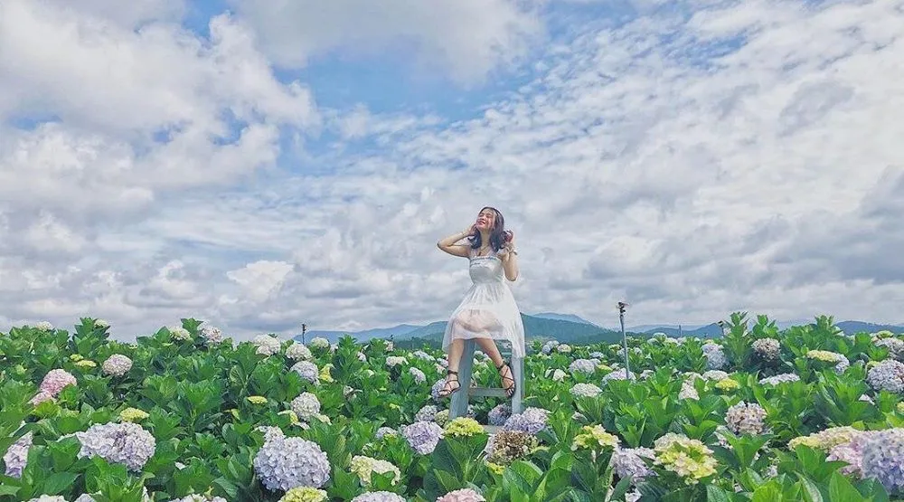
If you love the poetic, gentle and bold space of Da Lat, then Xuan Tho hydrangea field is a destination not to be missed in the journey to explore the mountain town. With a large area, stretching over gentle hillsides, the garden attracts many visitors because of the colors of hydrangeas blooming all year round - from light purple, blue to gentle pink.
Not only hydrangeas, this area is also adorned with many typical flowers of Da Lat, creating a vivid scene like a colorful natural painting. Small paths weaving between flower gardens, delicately decorated corners and a quiet, fresh space make this place an ideal background to "hunt" for poetic photos and keep beautiful memories with friends or loved ones.
2.2. Address and transportation instructions
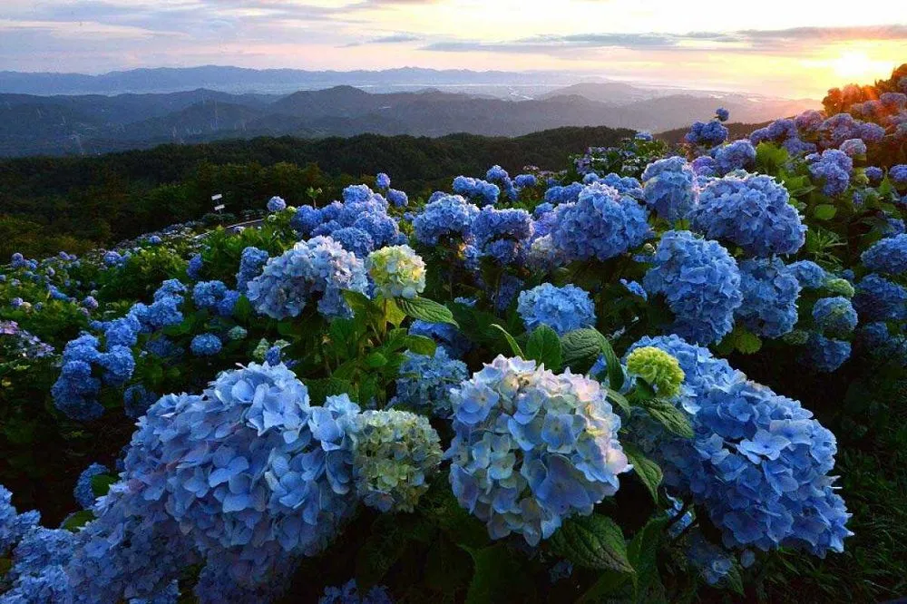
-
Address:Group 7 Street, Loc Quy Village, Xuan Tho Commune, City. Da Lat
-
Distance from the center: about 8–9km
Simple way to go:
From the Da Lat market area, you move towards Trai Mat, passing Linh Phuoc Pagoda (Ve Chai Pagoda)about 200m. When you see Trai Mat station on the left, turn onto Xuan Thanh street. Continue going straight for another 1.5km and you will come to a fork, turn right and go another 100m. At another intersection, turn left and go another 50m to Xuan Tho hydrangea field.
📌 If you are not familiar with the route, you should use Google Maps or rent a motorbike in Da Lat to be more proactive in moving.
2.3. Opening times and tour ticket prices
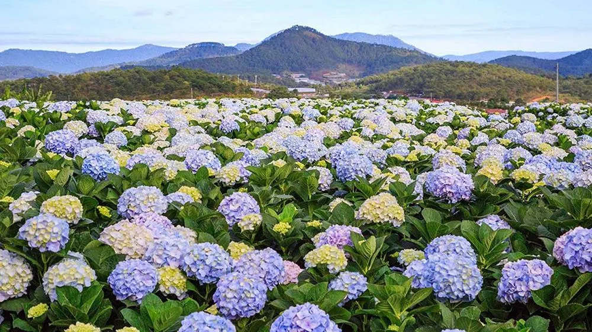
-
Opening hours:07:00 – 18:00 daily
-
Ticket price:
-
Adults: 30,000 VND/person
-
Children: 15,000 VND/child
3. Lac Duong hydrangea field - Romantic space in the middle of the pine forest
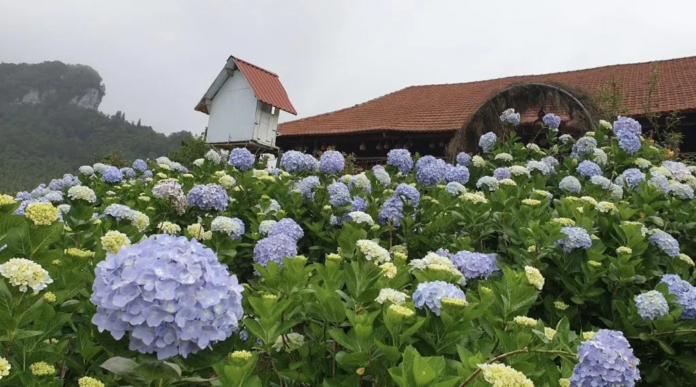
#### 3.1. Experience the large hydrangea garden in Lac Duong
Not far from the center of Da Lat, Lac Duong hydrangea field is one of the poetic check-in coordinates for virtual living enthusiasts. With an area of more than 2 hectares, this place is a true "flower paradise" - when millions of hydrangeas bloom amid the lush green pine forest and fresh air of the mountains.
The scenery here brings peace, rusticity and is especially romantic. That's why many couples have chosen this location to take outdoor wedding photos, taking advantage of natural light and gentle flower colors to create once-in-a-lifetime photos. Those who love nature and seek an intimate relaxing experience will definitely "fall in love" with this garden from the first time they visit.
#### 3.2. Location and directions
-
Address:Lac Duong district, Lam Dong province - about 15–20km from Da Lat center
-
How to get there:
From the city center, you follow Tran Hung Dao Street towards Highway 20. Then, turn onto Tran Quy Cap Street, continue passing Phan Chu Trinh, then down to Chi Lang area.
When approaching the provincial road 723 area, pay attention to ask local people to easily determine the turn to the flower field. Just go a short distance and you will see the scene of brilliant hydrangeas appearing in the middle of pristine nature - a vivid picture that cannot be missed.
3.3. Opening times and ticket prices
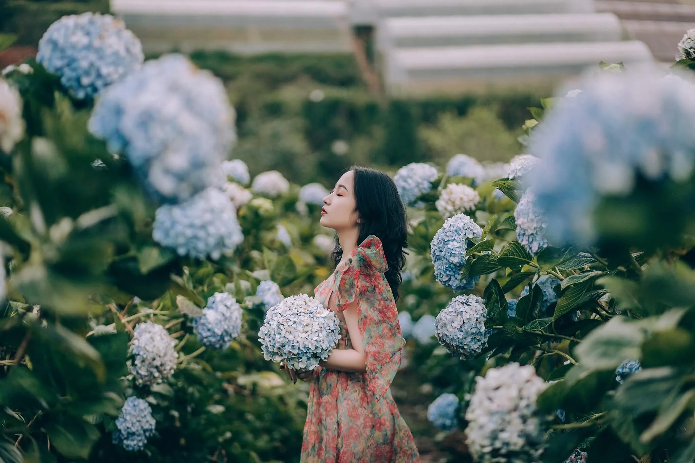
-
Opening hours:07:00 – 17:30 every day
-
Ticket price:30,000 VND/person
4. Sculpture Tunnel Hydrangea Garden - A sweet touch in the middle of Clay Village
4.1. Dreamy hydrangea space in the middle of Clay Village
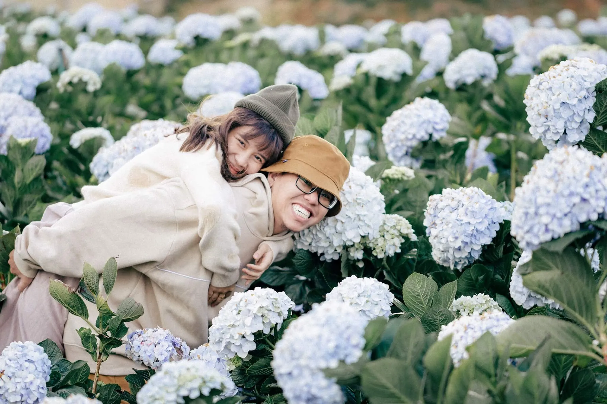
Besides the unique works sculpted with basalt red soil, the Sculpture Tunnel (also known as the Clay Village) also makes a strong impression on visitors with its colorful hydrangea garden. Located right within the tourist area, the Da Lat hydrangea field here is like a soft highlight among the artistic architectural works.
The garden has an airy space, filled with hydrangeas in all colors from purple, pink to soft blue - creating an ideal backdrop for those who love to take photos and explore the floral beauty of Da Lat. No matter which corner you stand in the garden, you can easily "catch" sparkling photos without dead angles.
4.2. Address and how to get to the hydrangea field
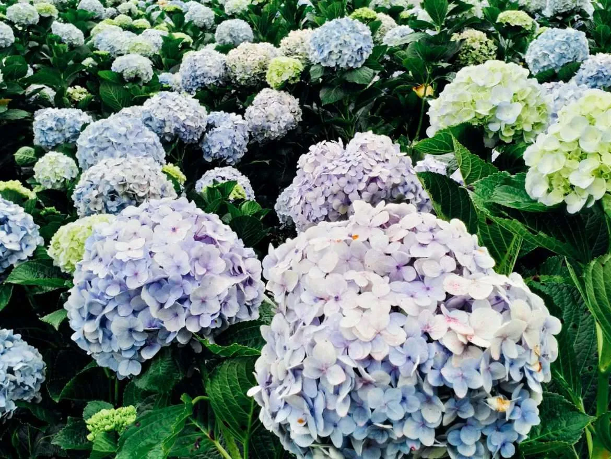
-
Address:Sculpture Tunnel Tourist Area, Ward 4, City. Da Lat
-
Directions:
Starting from Lam Vien square, you move along Ha Huy Tap streettowards Truc Lam Zen Monastery. When approaching the monastery, continue going about 10km more to reach the Clay Village area. Here, you can easily ask residents or resort staff to find the area growing Da Lat hydrangeas– beautifully cared for and planned right on site.
📌 Suggestion: You should go early in the morning or in the afternoon to avoid harsh sunlight and have the best light when taking photos.
4.3. Operating hours and tour ticket prices
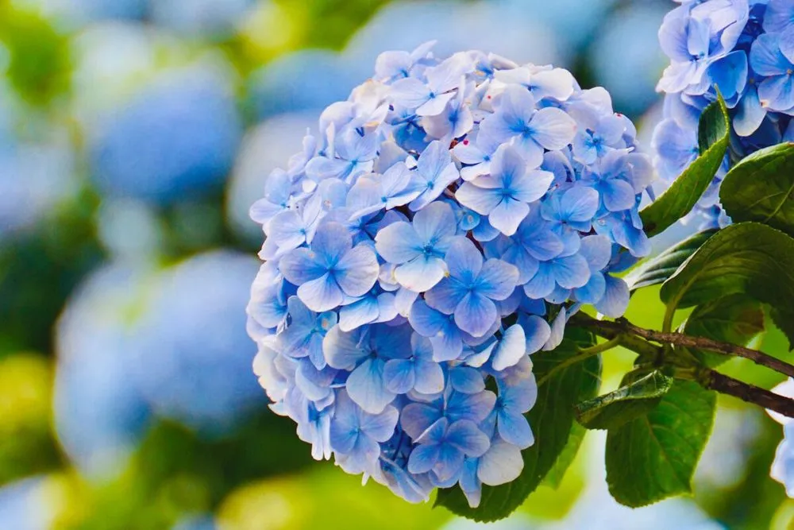
-
Opening hours:07:00 – 17:00
-
Ticket price:
-
Adults: 60,000 VND
-
Children: 40,000 VND
5. The Florest hydrangea garden - "Flower paradise" in the middle of Ta Nung forest
5.1. Discover the beauty of hydrangea fields at The Florest

If you are looking for a Da Lat hydrangea field that is both large and possesses a charming highland landscape, then The Florest is the ideal stop. Located on the romantic Ta Nung pass, The Florest impresses with hillsides covered with blue hydrangeas, blooming seasonally, creating a beautiful natural picture.
Not only hydrangeas, this place is also dotted with many other colorful flowers such as heather, snapdragons, dahlias... making the scene more lively and colorful. The Florest also invested in many delicate landscapes such as swings, flower gates, and wooden chairs in the middle of flower hills so that visitors can easily "hunt" for beautiful photos without much editing.
5.2. Address and how to get to The Florest
-
Address:Ta Nung area, City. Da Lat, Lam Dong
-
Distance:About 22km from the city center
From Da Lat market, you follow Hoang Van Thu street, turn left onto Van Thanh, then continue along Ta Nung pass (DT725). When approaching Me Linh Coffee Garden, turn left onto the small path, drive about 700m to the intersection with a sign to The Florest - Flowers In The Forest. Note that the road has a pass and is a bit steep, so make sure your steering wheel is steady if you travel by motorbike.
📌 Small tip: The route has not been accurately located on Google Maps, you should ask local people for directions to easily find this hydrangea field.
5.3. Opening hours and entrance ticket prices
-
Opening hours:05:30 – 18:00
-
Sightseeing ticket price:
-
Adults: 95,000 - 220,000 VND (depending on the included service combo)
-
Children: have separate policies, please inquire at the ticket counter
6. Pocket the experience of "virtual living" in Da Lat's hydrangea fields
When visiting Da Lat's hydrangea fields, you will not only admire the sweet beauty of the flower symbolizing purity but also have the opportunity to preserve artistic frames. Below are a few photography experiences you should refer to to have a set of "thousand likes" photos that are true to your muse in the middle of a mountain town.
6.1. The ideal time to see and take photos at the hydrangea garden
The most beautiful time for hydrangeas to bloom usually lasts from May to December, with the peak being May - summer, when the flowers bloom most brilliantly. On average, each hydrangea tree can bloom from 20–25 flowers, creating a scene filled with fresh, gentle colors. The special thing is that the flowers bloom for a long time, each flower can retain its beauty for 4 to 6 weeks, very suitable for tourists to take photos on weekends or holidays.
🌤*Tips:*The most ideal time to take photos is early in the morning (before 9:00 a.m.) or late in the afternoon (after 3:00 p.m.), when the light is soft, not harsh, and helps the photo appear most naturally colored.
6.2. Suggested outfits for taking photos at the hydrangea garden
Hydrangea fields often have gentle tones such as light blue, blue purple or milky white. Therefore, when coordinating clothes, you should choose gentle pastel tones such as white, pink, light yellow, blue... to create harmony with the natural background.
-
Women:A long maxi dress, puffy sleeves, and light, flowing material is the "weapon" that helps you transform into a muse in the middle of a flower garden. Accessories such as a straw hat, rattan basket or turban will help the overall look stand out.
-
Men:Neutral colors such as white, beige, navy blue will help accentuate elegance and easily coordinate with the large space of the flower field.
6.3. How to pose and choose an impressive shooting angle with a hydrangea field
With the beautiful scenery available at Da Lat hydrangea fields, you don't need to be too picky in posing. Here are a few simple styles that "win points":
-
Full body shot in the middle of a forest of flowers: Stand or sit in the middle of the garden path, pose in a simple side view, gently stroke your hair with your hand or gently lift the hem of your dress.
-
Taken from behind: This is the photo angle that helps you stand out among the vast space of flowers. A slow step or a distant look all create a poetic picture.
-
Close portrait photo:Hold a flower branch or lean close to the hydrangea flower to create depth for the photo.
💡*Note:*Avoid stepping on flowers or breaking branches when moving and posing to protect the beauty of the flower garden for many people to enjoy.
7. Interesting things about hydrangea fields in Da Lat
Da Lat - the foggy land is not only famous for its cool climate all year round, but is also a place to nurture and honor the beauty of hydrangea. Each Da Lat hydrangea field brings the feeling of being lost in a fairy garden, where each flower tells its own emotional stories.
7.1. The special feature makes Da Lat hydrangea garden so attractive
Although this flower is grown in many places, only in Da Lat - a place with ideal altitude, fresh air and fertile soil - does hydrangea grow brilliantly and bloom large, round, and evenly. This is what makes Da Lat hydrangea gardens become a "must check-in" place for tourists.
Some other interesting points:
-
No toxins:Hydrangeas in Da Lat are safe, friendly to the environment and people.
-
Flower color changes with soil: Soil pH can change flower color. Acidic soil produces blue flowers, neutral soil produces purple, and alkaline soil causes flowers to turn pink.
🌱*Fun fact:*Many people mistakenly think that flowers are artificially dyed, but in fact it is due to natural minerals in the soil that directly affect the color of the flowers!
7.2. Origin and profound meaning of hydrangeas
This flower originates from Japan and temperate regions, then was introduced to Vietnam and took root in the Lam Dong highlands. The name "hydrangea" carries the connotation of grace, sophistication and nobility - just like the round shape of each flower cluster.
🌸Meaning according to color of hydrangea:
-
Pink:Represents faithful love and romance in relationships.
-
Blue:Is a symbol of regret and sincere apologies.
-
White:Represents clarity, purity and new beginnings.
-
Light purple:Suggests dreaminess, loyalty and deep affection.
-
Dark green: Brings a message of faith, hope and good things in the future.
💡*Pro tip:*If you visit the Da Lat hydrangea fieldsat the beginning of the season, you will have the opportunity to watch the flowers change color from white to purple - a rare "golden moment" of the year.
8. Note when visiting Da Lat hydrangea fields
To have a complete experience at Da Lat hydrangea fields, you should remember:
-
Choose the right time:Check opening hours, avoid going on days when the garden is temporarily closed.
-
Suitable attire: Prioritize low-heeled shoes, light-colored dresses that are easy to move in and take beautiful photos.
-
Stay on the right path: Do not step on flowers, do not pick flowers to protect the landscape.
-
Maintain general hygiene: Absolutely do not litter the garden grounds.
-
Enjoy the space:Don't just take pictures, take time to feel the peaceful beauty here.
9. What to eat after checking in to the hydrangea field?
If you have just had a morning of "photo hunting" at hydrangea fieldsXuan Tho or Lac Duong, then the afternoon is the ideal time to stop at Xom Leo Grill & Chill Shop - a unique and poetic culinary place no less than the flower garden.
Located on a high hill, Xom Leo Grill & Chill Shop owns a panoramic view of Da Lat cage house, especially ideal for watching the gentle sunset over the dreamy city. The open, airy space, combined with the typical cold weather, makes grilled meals here more delicious.
The special point that "captures the hearts" of tourists at Xom Leo is the moment when the train passes right below the restaurant, creating an extremely romantic scene that is rare to find anywhere else. This is also an extremely cool "virtual living" background for check-in enthusiasts.
🌟Some dishes worth trying at the restaurant:
-
Beef rolls with hot enoki mushrooms
-
Grilled beef with salted egg cheese
-
Shaking sturgeon
-
Chicken hotpot with é leaves
Enjoying delicious food while enjoying the view of the city lighting up - this is the perfect way to end a day of romantic Da Lat travel.
📌Address:113 Huynh Tan Phat, Ward 11, Da Lat
📩Reserve a table:*Here*
📍 Directions:*Google Map*
📞Hotline:076.45.27.336 – 08.99.42.84.34 – 0902.91.22.40
Da Lat always attracts tourists with its dreamy beauty, especially the hydrangea fields blooming brilliantly amid the cool green space. This is the ideal check-in point for those who love romance and want to save beautiful moments. After visiting, you can visit Xom Leo Grill & Chill Shop - a very chill outdoor grill shop in the middle of the pine forest, very popular with young people. The chilly air combined with fragrant grilled food and poetic scenery will make the trip more complete.